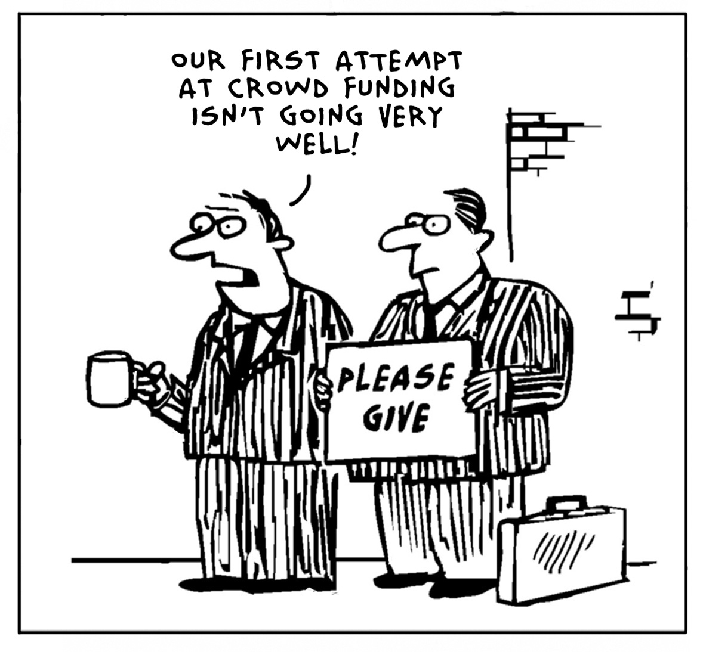
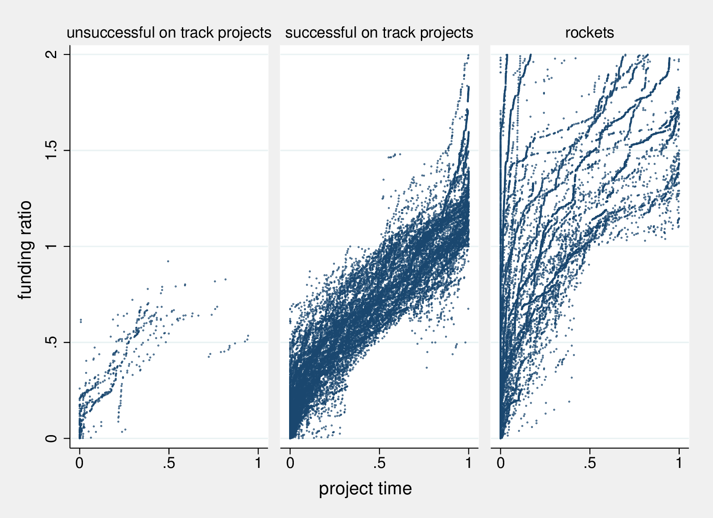
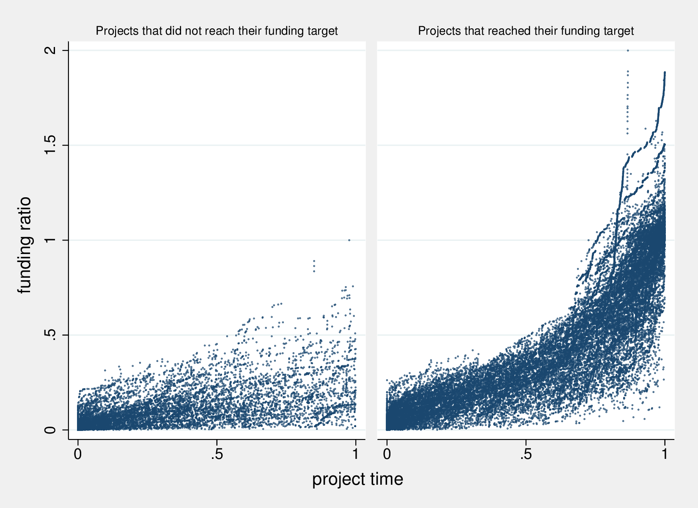
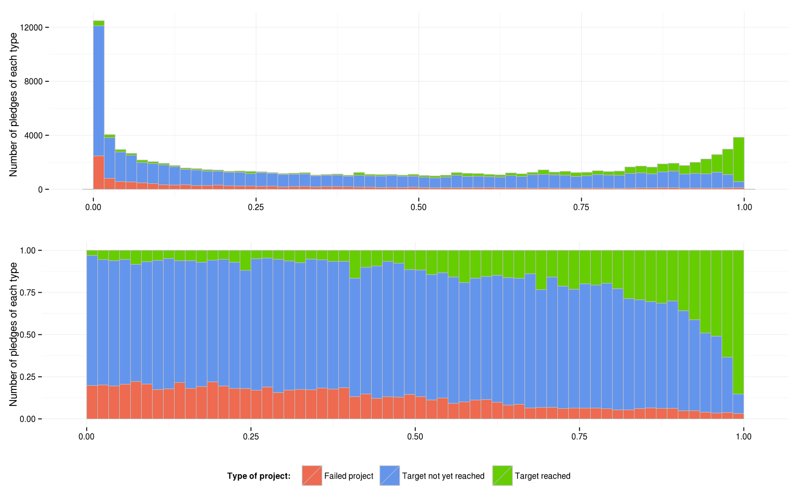

It’s never too late for (pre)-sales: the dynamics of crowdfunding
The world is a strange place. Unknown of until recent years, crowdfunding platforms – like Kickstarter or Indiegogo – are making the headlines around the world. Thousands of people are donating money to help artists produce their records, graphic novels, video games; or to allow geeks to produce a tool to transform bananas in a piano (and other things, too), a smart handle for cool bikes or even a set of tools to make robots with drinking straws. More: a project founder might ask for, say, fifty thousand dollars to produce a wheeled plastic cooler, and receive support for thirteen million, 260 times as much.

Why is crowdfunding so successful? Some people argue that it taps into a hidden reservoir of altruism present in internet communities – and that asking for help is the first step to get it. Add on top of this the internet, that allows every sort of niche – no matter how remote – to find its devoted supporters, and you might get near to understanding why crowdfunding is booming.
But is this the whole story – find a niche, fill it with a clever idea, and off you go to a successfully (crowd)funded project? How about failed project? Were they not-so-clever after all, or didn’t they find their niche? Moreover, not all projects are a success story from the very start: some never make it off the ground, some are successful only at the very end, and some have rollercoaster rides over their funding period. Is a head start necessary for project success? To answer all thee questions it is crucial to dig deeper into the motivations of the crowd. Why do people back projects?
In a new paper with Tobias Regner we explore these questions using data kindly provided by Startnext, the biggest German crowdfunding platform. The answers indicate that it is fairly possible for not-so-successful projects to make it thanks to a last-days surge in pledges, and that project success seem to have to do much more with sales than with altruism.
Startnext gave us access to its whole database – more than 100.000 pledges to more than 2.000 projects. This allows us to add another layer to the existing literature on crowdfunding, focusing on the project-level data: we have access to the individual donations, and what the backer got in exchange for his or her money.
What we find is partly known, partly striking. It was known from previous research that smaller, shorter, better described projects with a preexisting fan base tend to be more successful than larger, more ambitious projects; this is true also at Startnext. It was also known that communicating with the crowd – via video, blog posts, images, updates – leads to higher success rates. Previous research had also shown that project success can be predicted quite reliably from the early stages of the financing phase, to the point that dedicated web services exist that give day-by-day predictions on Kickstarter campaigns, like Kickspy.
The first striking finding of our analysis is that predictions are not able to track a large part of projects, that seem unsuccessful until very late in their funding phase and eventually make it. Your average crowdfunding campaign starts off with a healthy amount of pledges, levels off in the middle part of the funding phase, and then (eventually) gets a boost in the last few days. This pattern is followed by a relative majority of projects – about 23% at Startnext – that start on track to success, level down off-track, and then jump back at the end. This is usually taken into account by prediction algorithms, so nothing new here. Of course this is not always the case – some projects, about 4%, are rockets, shooting off to success in the very first days, and others – about 1% – do not make it even if they have been on track for most of their funding phases. But by and large, the majority of projects follow this pattern.

We find that even projects that do not follow this pattern have an ability to make it in the end that is larger than predicted by existing algorithms. Among the not-on-track projects – about 45% at Startnext – predictions based on performance of previous projects and similarity are able to tell apart the projects that will eventually succeed only about 35% of the time. Nearly 400 not-on-track projects on Startnext turn out to be success stories even if they looked bleak for a long time and predicted outcomes were negative.

The first message of this analysis is that it is never too late in crowdfunding. But what tells these projects apart from the others? While the data we have does not allow us to uncover the full story, we have indirect evidence that the eventually successful projects show increased communication and interaction with the crowd, via videos, blog posts, and the like. It is important to keep the projects alive and updated to harness the power of the crowd.
But it is not only communication. The second striking finding is that the key to understand crowdfunding success is at its core simple and old: project success is about sales. Outright donations – sending money for the heck of it, or for a small ‘thank you’ note – account just for 19% of all pledges – the rest is pre-selling of a product or service related to the project. Moreover, exactly what is sold and its characteristics play a major role in project success. Offering the product itself (the new album, the comic book, the coolest cooler) is positively correlated with success, while offering some services (a meeting with the band, a personalised lesson on how to draw comics), thank-you notes, invitations to special events leads to lower rates of success. Crucial to a project success are also all these rewards that enhance the social image of the backer – tee-shirts, banners, public thank yous, anything that might help the backer say ‘I was there’ to others. Tee-shirts are all over crowdfunding websites, and their presence pays off.
Most strikingly, sales are at the core of the very dynamics of crowdfunding projects we have talked about earlier. When looking at aggregated pledges over time, the usual pattern of projects funding leads to un U-shaped relationship between the amount of pledges and time. This had been usually ascribed to last-minute attempts by project launchers to get over the pre-set threshold. Access to pledge data allowed us to look inside the U, to check if this was indeed the case. It is not: the spike in the last days is due to pledges made to projects that already passed the threshold. Overall, 18.7% of all pledges go to projects that, technically, already made it; in the last days, the share rises to as high as 75% (green bars in the bottom plot). And the vast majority of these pledges are outright pre-sales: backers want to get hold of the product on offer, and once the project is funded they can do so at no risk of being deceived.

While there is truth in the claim that crowdfunding is based by and large on people’s altruism and enthusiasm for innovative, creative projects, it seems that the funders want to get their share, too. Seen in the light of data, crowdfunding appears, foremost, to be a clever way of selling an innovative, not-yet fully tested prototype product, while simultaneously securing the necessary funding to cover development and production costs.
Crowdfunding: Determinants of success and funding dynamics, by Paolo Crosetto and Tobias Regner. Find it on IDEAS!
Back to top